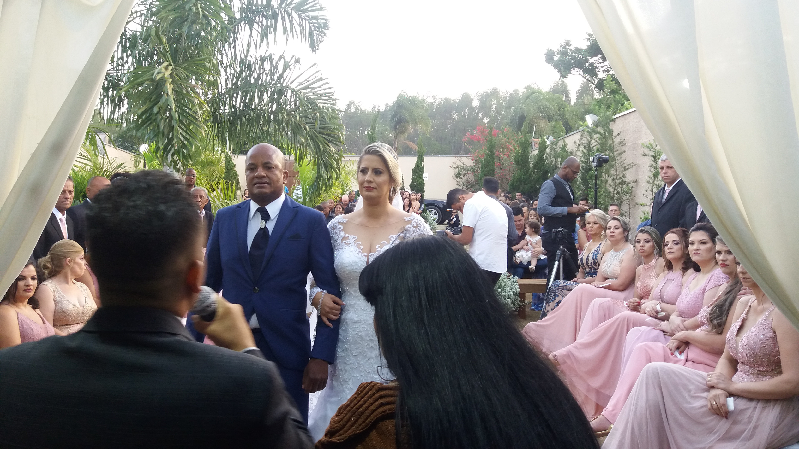
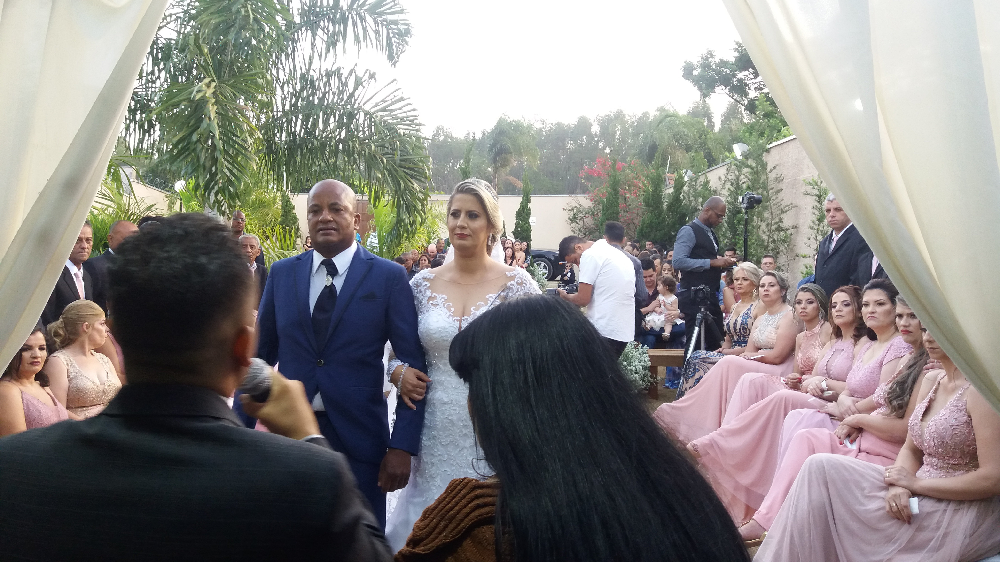
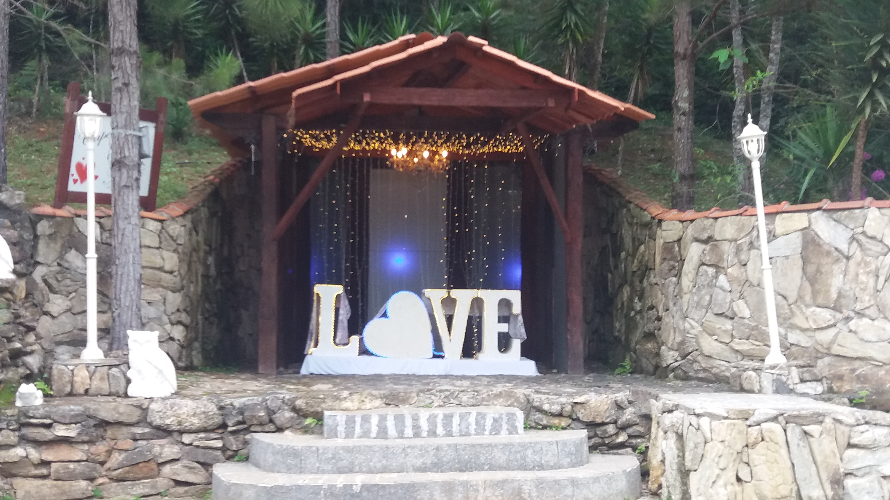
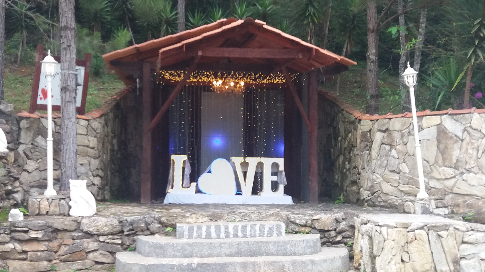

Informação sobre Navarru's Cerimonial & Eventos
A música de casamento é essencial para criar o ambiente tão desejado pelos noivos. Desde a cerimônia até a recepção a música é tão importante ou mais que outros serviços. Emoção, encanto e magia é o que a música perfeita imprime no grande dia e certamente é o que vocês desejam transmitir em seu grande dia.
Serviços oferecidos
A Navarru's Cerimonial & Eventos, realiza apresentações musicais em cerimônias de casamentos e eventos empresariais, com diversas formações disponíveis. Todo o serviço pode ser personalizado com um repertório marcante para o casal. Dispõem de violinos, viola, violoncelo, trompete, trompete triunfal (clarim), trombone, trompa, percussão, saxofone, flauta e teclado etc.
Área de atuação
A Navarru's Cerimonial & Eventos está localizada na cidade de São Paulo, disponível para atender também em outras cidades próximas. Entre em contato o quanto antes e agende uma reunião.
Vitrine


 


 

Videos
Faqs
| O que inclui o pack de casamento? | Dispõe-se de violinos, viola, violoncelo, trompete, trompete triunfal, trombone, trompa, percussão, saxofone, flauta e teclado. Atendimento personalizado; Pagamento facilitado e parcelamento |
|---|---|
| Com que antecedência devo entrar em contato? | No mínimo um mês se for possível. Mais se não for pode entrar em contato até uma semana. |
| Tamanho da formação: | Solista Pequena (2-músicos) Média (4-6 músicos)Grande (mais de 6 músicos) |
| Repertório: | O repertório abrange músicas clássicas, sacras, temas de filmes, populares, músicas atuais, entre outros estilos. |
| Há algum problema ou impedimento se peço uma música que não está no repertório? | Imagina, farão de tudo para atender e alcançar a satisfação dos clientes. |
| Experiência: | Têm profissionais com uma vasta experiência no setor de eventos e casamentos por mais de 13 anos, tornando sonhos realidade. |
| Dispõe de equipamento próprio? | Sim. |
| Necessita de algum material em concreto ou condições específicas para oferecer o serviço? | Sim, basta ter as informações como: Endereço do evento, qual formação deseja, se precisa de aparelhagem de som, juntamente com a data do evento, e já podem passar um orçamento. |
| Pode fazer deslocamentos? | Sim, geralmente a gasolina que vão usar. |
| Cobre mais de um casamento por dia? | Sim. |
| Trabalha sozinho ou conta com uma equipe de profissionais? | Equipe. |
| Quanto tempo dura o serviço? | O cliente que determina. Podem ser contratados até para tocar uma música só, se assim for requisitado. Mas geralmente a cerimônia é em torno de uma hora e meia. |
| De quanto tempo necessita para preparar a atuação? | No mínino 1h hora para montagem dos equipamentos. |
| Realiza atuações ao ar livre? | Sim. |
| Recebe por horas ou por evento? | Evento. |
| Se fosse necessário, poderia realizar horas extras? | Sim. |
| Como é o pagamento das horas extras? | Se for pedido com antecedência ao evento, podem negociar para depositar na conta. E se for após o evento começar, conversam na hora o que podem acrescentar se for o caso. |
| Quais são as formas de pagamento? | -Pagamento via: depósito, transferência bancária. Ou no ato. |